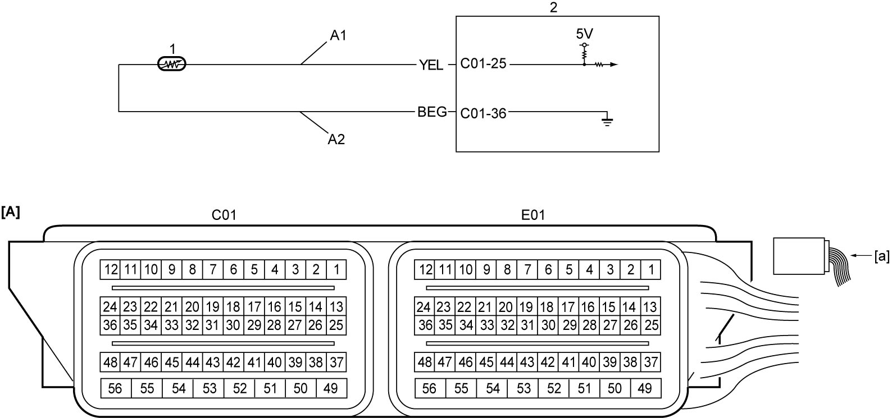

1A
| DTC P0112 / P0113 |
DTC Detecting Condition and Trouble Area
| DTC detecting condition | Trouble area |
|---|---|
|
P0112: Intake Air Temperature Sensor 1 Circuit Low Output voltage of IAT sensor signal circuit is lower than 0.04 V for 10 sec. (3 D/C detection logic) |
•IAT sensor and/or its circuit
•ECM |
|
P0113: Intake Air Temperature Sensor 1 Circuit High Output voltage of IAT sensor signal circuit is higher than 4.9 V for 10 sec. (3 D/C detection logic) |
Circuit Diagram

 "Expand image")
| [A]: | ECM connector (View: [a]) | A2: | IAT sensor ground circuit | 2. | ECM |
| A1: | IAT sensor signal circuit | 1. | IAT sensor |
DTC Confirmation Procedure
NOTE:
Check that the following DTCs are not detected in this “DTC Confirmation Procedure”.
•ECT sensor (P0116, P0117 and P0118)
1)Run engine at idle speed for 10 sec.
DTC Troubleshooting
| Step | Action | Yes | No |
|---|---|---|---|
| 1 |
Was “Engine and Emission Control System Check” performed?
|
Go to Step 2.
|
|
| 2 |
IAT sensor signal circuit and ground circuit check
1)With ignition “OFF”, disconnect “C01” and “E01” connectors of ECM and IAT sensor connector.
2)Check for proper terminal connection to “C01” and “E01” connectors and IAT sensor connector.
3)If connections are OK, check the following points.
•Resistance of “A1” and “A2” circuits: less than 1 Ω
•Resistance between each of “A1” and “A2” circuits and ground: infinity •Resistance between “A1” circuit terminal and other terminal at IAT sensor connector: infinity •Voltage of “A1” and “A2” circuits: approx. 0 V (When ignition is “ON”) Is check result OK?
|
Go to Step 3.
|
Repair or replace defective wire harness.
|
| 3 |
IAT sensor check
1)Check IAT sensor.
Is check result OK?
|
Replace ECM and recheck DTC.
|
Replace IAT sensor.
|